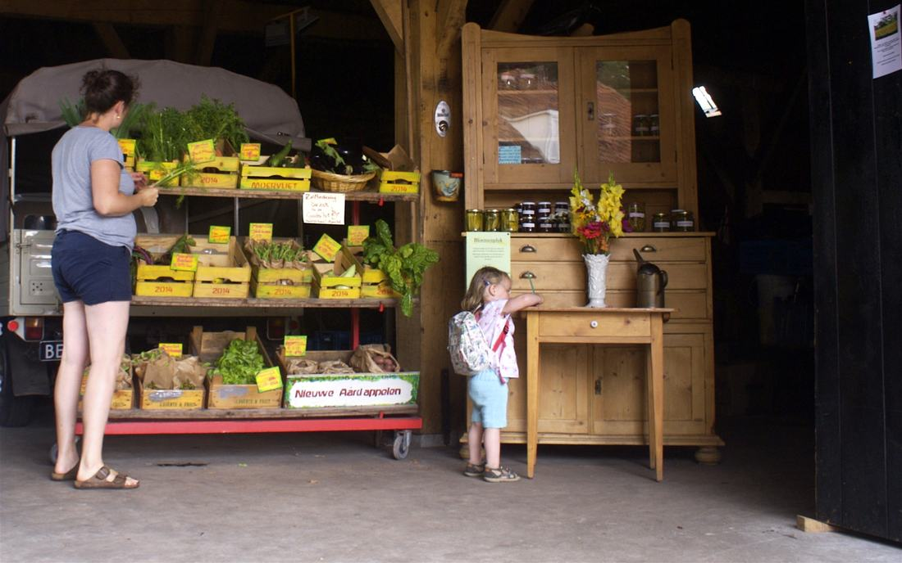
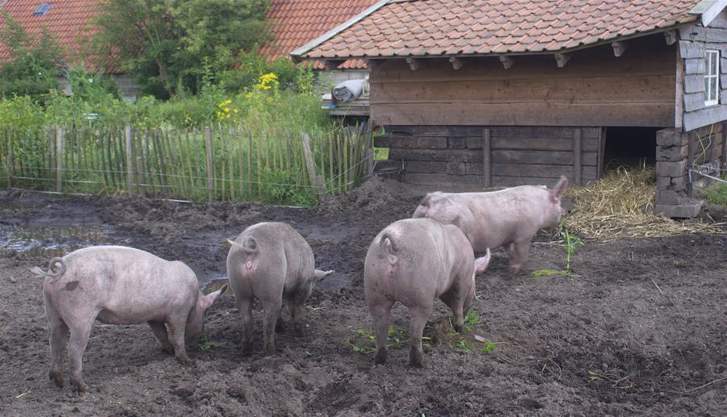
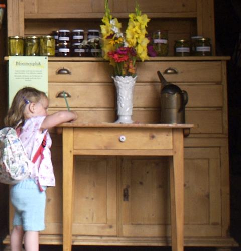
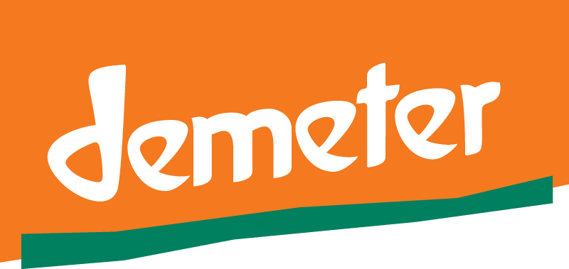

De boerenwinkel
Alles van eigen land, erf en wei. Maandag tot en met zaterdag open van 10:00 tot 18:00 uur, in de Vlaamse Schuur.
Wat er per seizoen is
De groente groeit op 2 hectare bij de boerderij en in de tunnelkas. Wat er in de winkel ligt, wisselt dus mee met het seizoen.
Voorjaar
Tuinbonen, bosbietjes, raapstelen, bosui, bosknoflook, radijsjes, prei en sla.
Zomer
Boontjes, tomaten, paprika, komkommer, auberginen, courgettes, rucola, sla, vroege aardappelen, bospeentjes, snijbiet, suikermais, spitskool en paksoi.
Herfst
Worteltjes, rode bietjes, prei, pastinaken, pompoenen en diverse kolen.
Het hele jaar
Aardappelen, prei, wortelen, rode bieten, diverse kolen en uien.
Er worden uitsluitend eigen producten aangeboden.

Vlees van eigen dieren
Op het erf hebben vier varkens hun hok en uitloop. Onze runderen lopen verderop in natuurgebied De Vloeiweide van Brabants Landschap.
Het varkensvlees en rundvlees van onze eigen dieren is diepgevroren verkrijgbaar. Voor de liefhebber zijn er vleespakketten vanaf 5 kilo.

Uit eigen keuken
Naast de verse groenten, aardappelen en eieren staan er ook ingemaakte producten in de winkel.
- Appelcompote
- Jams
- Tomatensap
- Ingemaakte groenten
- Likeuren
- Siropen

Biologisch-dynamischNL-BIO-01
Kom langs
De winkel is open van maandag tot en met zaterdag, van 10:00 tot 18:00 uur. Een vraag of een vleespakket bestellen? Bel of stuur een bericht.
Boerderij Moervliet
Frans van Laer en Maria Rössler
Zondag gesloten